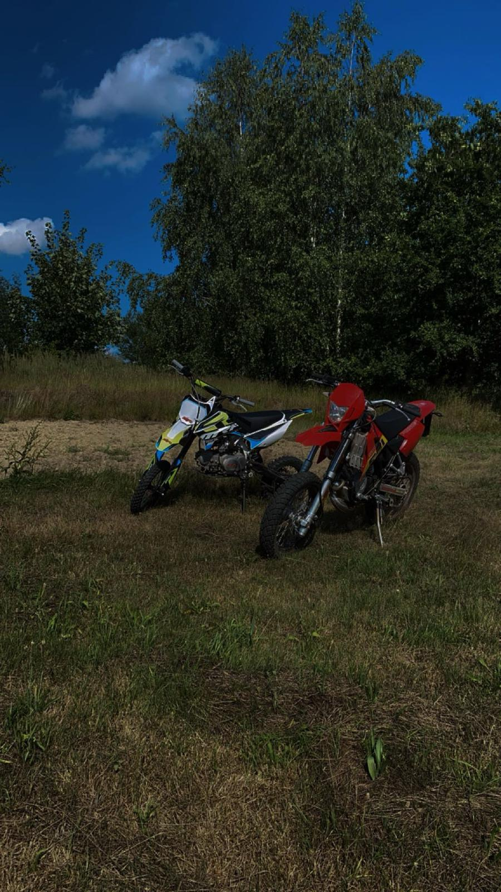
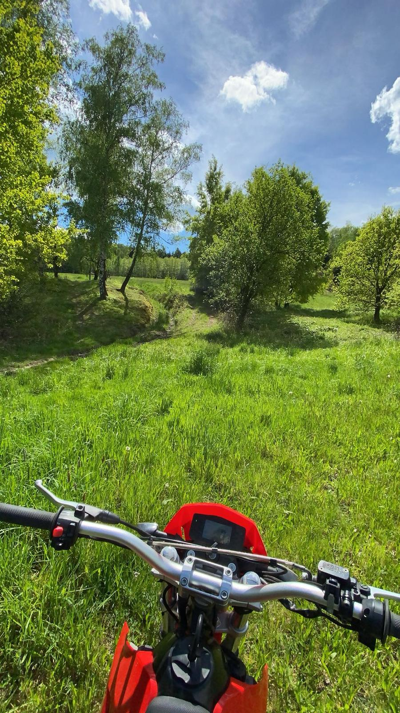

Jazda na motocyklu to świetna zabawa i sposób na poczucie wolności. Wiatr we włosach, dźwięk silnika i poczucie prędkości sprawiają, że każda przejażdżka daje mnóstwo adrenaliny. Motocykl daje możliwość szybkiego poruszania się, zarówno po mieście, jak i poza nim. To także sposób na relaks i oderwanie się od codziennych problemów.
Jazda na motocyklu uczy skupienia i panowania nad pojazdem. Trzeba być czujnym na drodze, zwracać uwagę na innych uczestników ruchu i dobrze reagować na zmieniające się warunki. Dla wielu motocyklistów to nie tylko transport, ale prawdziwa pasja i sposób na życie. Każda podróż to nowe wyzwania i emocje, które sprawiają, że motocykl staje się czymś więcej niż tylko środkiem transportu.


Powrót do strony głównej...